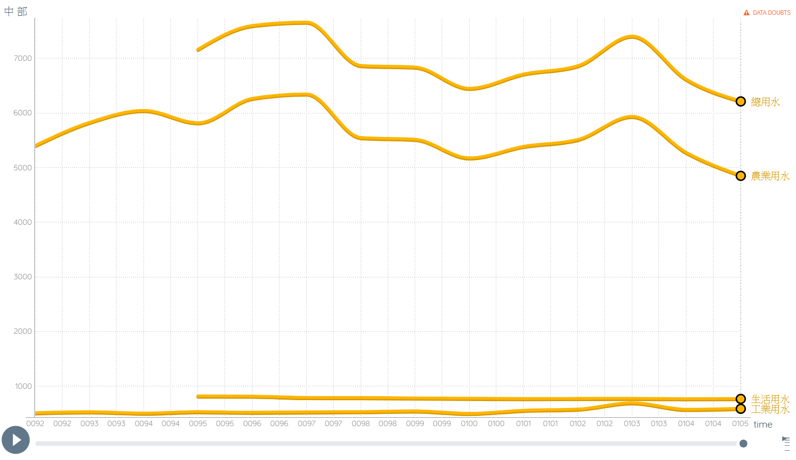
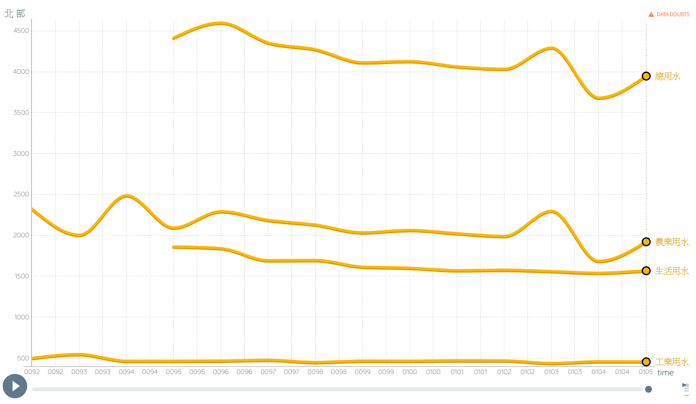
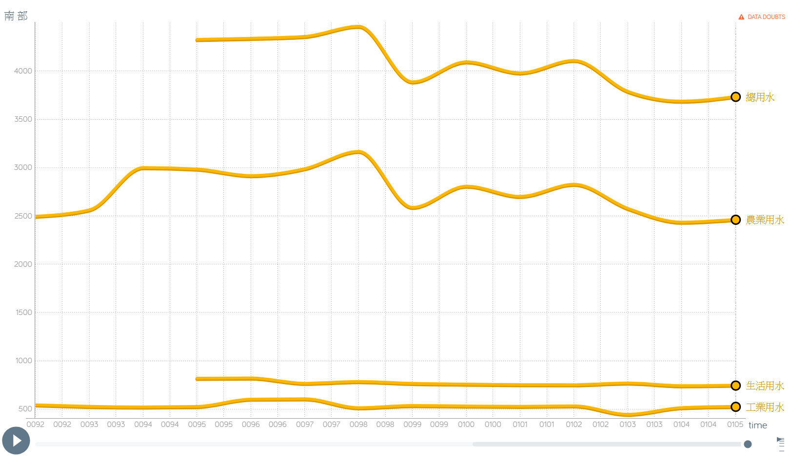
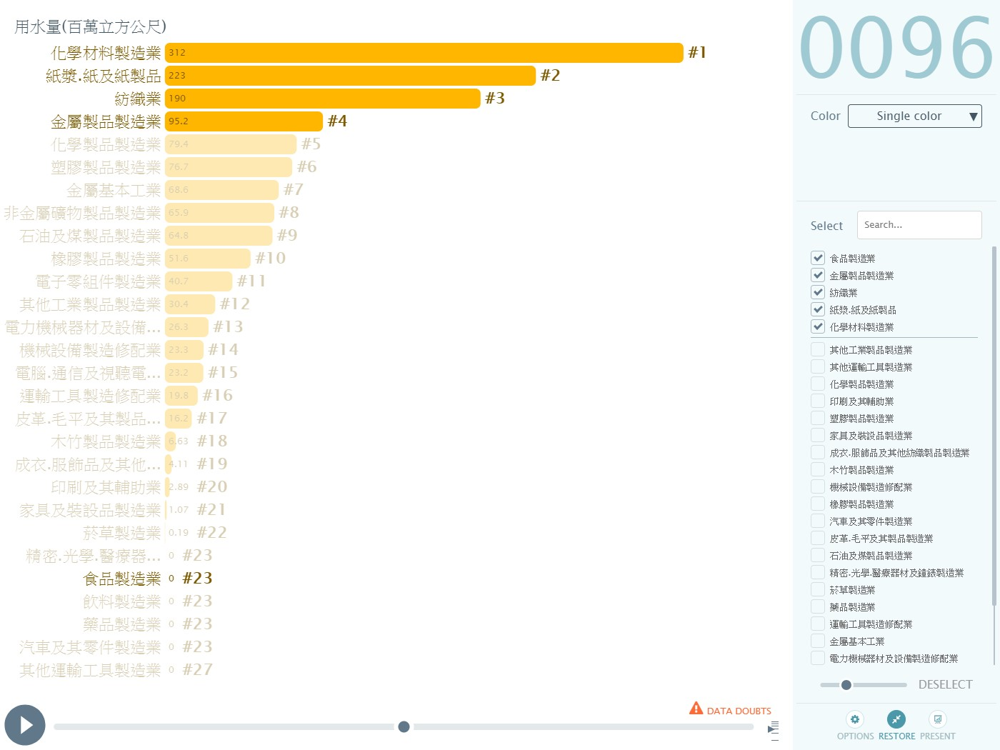
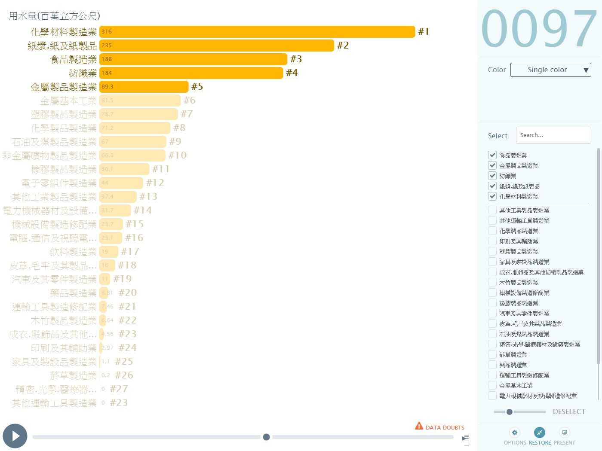

分析
台灣用水-地區與用途
將台灣各地區不同用途的用水量，依照年份統計分別繪製而成。
(一) 以地區為討論基準
- 東部:
根據東部用水的圖表可以看見，總用水量的曲線與農業用水的曲線是十分接近的，可以看出在東部地區影響用水最大的即是農業上的使用。 - 中部:
根據中部用水的圖表可以看見，總用水量的曲線和農業用水的曲線隨時間起伏的樣貌是相似的，可以看出影響中部地區用水最大的是農業上的使用。  - 南部:
- 北部:
相較於其他縣市而言，北部地區的生活用水量較其他地區大上許多，可以從北部地區人口數為台灣最大得到解釋。  - 小結:
除了人口最多的北部地區之外，其他地區總用水量主要受到農業影響而上下起伏。


(二) 以用途為討論基準-台灣工業用水
比較區域工業面積、用水量兩張圖，可看出工業面積的曲線和用水量的曲線隨時間起伏是相似的。
將區域工業面積、用水量的數據算出相關係數為0.983522，證明各區域的用水量和工業面積是有關係的。
工業用水來源分為自行取水與自來水兩種，目前台灣工業用水來源仍以自行取水居多。
翻閱年報得知自來水系統供應之百分率較低原因是:
- 未設置工業專用供水系統，且由自來水供應之水 價與一般用水相同，會使得成本增加。
- 部分工廠用水要求水質特殊，或不適用含氯或消毒藥劑之自來水，而採自行取水供應。
- 應用自來水之成本高於自行取水成本，其差距太大。
翻閱年報得知：該區域前五大用水行業用水量占全區用水量百分比順位趨勢吻合;
且其順位在前者，相對的單位用水量大之業別所占比重亦大。
從圖表可以看出台灣從民國87年到105年的工業用水量前五名主要為：
- 化學材料製品業
- 紙漿、紙及紙製品
- 食品製造業
- 紡織業
- 金屬製品製造業
其中金屬製品製造業和食品製造業分別是從民國96年和97年才進入前五名;
而化學材料製品業和紙漿、紙及紙製品業則穩站前兩名。


(三) 以用途為討論基準-台灣用水分類
- 農業用水 - 民國105年台灣農業用水
- 工業用水 - 民國105年台灣工業用水
- 生活用水 - 民國105年台灣生活用水
- 總用水 - 民國105年台灣總用水